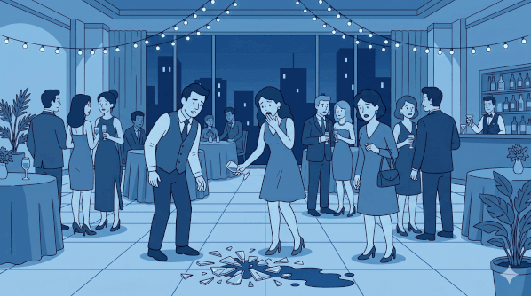
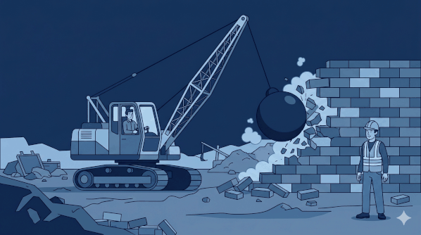
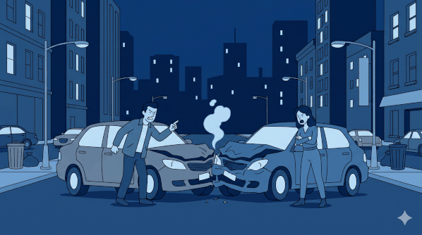
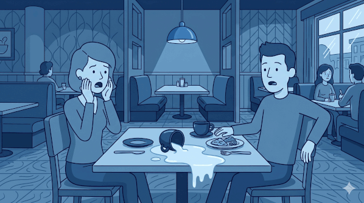
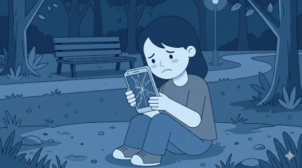
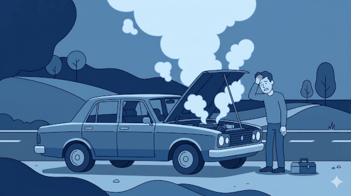
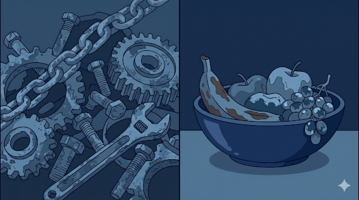
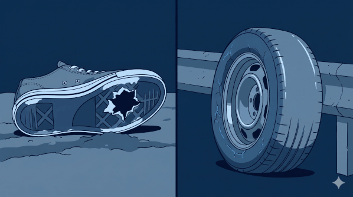

Romper, dañar, estropear, averiarse: el vocabulario de la rotura, el daño y los accidentes, con sus variantes regionales y la gramática del se.
En español, lo que se rompe casi siempre se puede decir de dos maneras: alguien lo rompe, o se rompe solo. Esta página reúne los verbos más útiles para hablar de roturas, daños, averías y accidentes —de los más comunes a los más regionales— y termina con la gramática que los gobierna: el contraste transitivo / pronominal y el se accidental.
NOTA*
Almost every verb on this page has two faces. A transitive one — someone breaks something: Juan rompió el vaso. And a pronominal one with se — the thing breaks "on its own," with no one named: El vaso se rompió. That little se quietly deletes the doer and presents the event as spontaneous. Watch for the pairs (romper / romperse, derribar / derrumbarse, dañar / dañarse) as you read — and see the grammar review at the bottom for the full picture, including the se me rompió "accidental" construction.
Velocidad 🔊
①
Romper, quebrar y partir
Breaking & snapping

El núcleo del tema: un objeto se parte, se quiebra o se hace pedazos. Romper es el verbo general y neutro; el resto añade matices de cómo se rompe — de un golpe seco, en dos, en astillas o en mil pedazos.
NOTA*Romperse is the neutral, universal verb for breaking — including bones (me rompí el brazo). Across Latin America quebrarse is just as common for bones and brittle things (me quebré la pierna), where Spain leans on romperse. Two false-friend traps: quebrar also means to go bankrupt (la empresa quebró), and partirse colloquially means to crack up laughing (me partí de risa).
②
Destruir, demoler y derribar
Destruction & collapse

Cuando la rotura es a gran escala — un edificio, un puente, un pueblo entero. Aquí la fuerza es total: se destruye, se demuele, se derriba o, sin que nadie lo empuje, se derrumba.
destruirto destroy
El incendio destruyó la casa.
The fire destroyed the house.
demolerto demolish
Demolieron el viejo estadio.
They demolished the old stadium.
derribarto knock down, to topple
Derribaron el muro en una hora.
They knocked down the wall in an hour.
derrumbar / derrumbarseto collapse, to cave in
El puente se derrumbó tras el sismo.
The bridge collapsed after the quake.
arrasarto raze, to devastate
El huracán arrasó el pueblo.
The hurricane razed the town.
aplastarto crush, to flatten
La roca aplastó el techo del auto.
The rock crushed the car roof.
NOTA*
This pair is the cleanest live demo of the page's grammar. Derribar is transitive — a force knocks something down: derribar un muro, derribar un avión (shoot it down), derribar al gobierno (topple it). Derrumbarse is pronominal — it comes down on its own: el edificio se derrumbó. Same event, but derribar names a culprit and derrumbarse doesn't.
③
Chocar, estrellar y volcar
Crashes & collisions

Los accidentes de impacto: vehículos que chocan, se estrellan o vuelcan. El matiz va de la colisión cotidiana al choque violento que destroza.
chocarto crash, to collide
El auto chocó contra un árbol.
The car crashed into a tree.
estrellar / estrellarseto crash (violently), to smash
El avión se estrelló en la montaña.
The plane crashed into the mountain.
volcar / volcarseto overturn, to tip over
El camión volcó en la curva.
The truck overturned on the curve.
atropellarto run over (a person/animal)
Un coche atropelló a un peatón.
A car ran over a pedestrian.
colisionarformalto collide
Dos trenes colisionaron de frente.
Two trains collided head-on.
NOTA*Chocar (con / contra) is the everyday "crash/collide." Estrellarse (contra) is more violent — a smash that wrecks (a plane se estrella, never just choca). Volcar is the tip-over/overturn verb and reappears in Card ④ at table-top scale. Note chocar also carries idioms we're leaving out: me choca (it bugs me, Mexico) and ¡chócala! (high five).
④
Derramar, volcar y tirar
Spills & knocking over

Los accidentes domésticos por excelencia: líquidos que se derraman y objetos que se vuelcan o se tiran al suelo. Aquí vive el se accidental (lo vemos a fondo al final).
derramar / derramarseto spill
Derramé el café sobre el teclado.
I spilled coffee on the keyboard.
volcar / volcarseto knock over, to tip over
Volqué el vaso sin querer.
I knocked the glass over by accident.
tirarto knock over, to drop, to spill
El gato tiró la planta.
The cat knocked the plant over.
NOTA*
This is where the "accidental se" lives (full treatment in the grammar review). Se me cayó, se me derramó, se me volcó — the me says it happened to you and frames it as an accident, not a clumsy act. A regional aside: in Mexico and Central America regar is colloquial for spilling (regué el agua) — recognition only, not the neutral default.
⑤
Dañar, estropear y arruinar
Damage, ruin & spoil

Cuando algo no se parte, pero queda inservible: se daña, se echa a perder, se arruina. Es el campo del deterioro, no de la rotura limpia.
dañar / dañarseto damage
La humedad dañó los libros.
The damp damaged the books.
estropear / estropearseEspañato ruin, to spoil, to break
Se estropeó la comida con el calor.
The food spoiled in the heat.
arruinar / arruinarseto ruin
La lluvia arruinó el picnic.
The rain ruined the picnic.
echar(se) a perderto spoil, to go bad; to ruin
Se echó a perder la leche.
The milk went bad.
deteriorar / deteriorarseto deteriorate
El edificio se deterioró con los años.
The building deteriorated over the years.
NOTA*
For food going off and plans getting ruined, estropear(se) is the Spain reflex; across Latin America the neutral choices are echar(se) a perder (se echó a perder la fruta) and dañar(se). Keep echar a perder / dañar as your default and read estropear as Peninsular.
⑥
Dejar de funcionar — cuando un aparato se rompe
Stopped working

Cómo decir que un aparato "se rompió" cambia muchísimo según el país. La forma neutra siempre funciona; las regionales conviene reconocerlas, no producirlas.
Quiero decir…
Neutral (seguro)
Por región
it broke down / stopped working
dejó de funcionar · no funciona · se rompió
se estropeó · se averióEspaña · se descompusoMéxico · se malogróPerú · se dañóCaribe/Col. · no andaCono Sur
the bulb burned out
se quemó el foco
se fundió la bombillaEspaña
it's acting up / glitching
está fallando
(universal)
NOTA*
"My car broke down" has no single pan-Spanish verb — each region has its own, and using the wrong one marks you instantly. Produce the neutral dejó de funcionar / no funciona / se rompió; recognize the rest. Two specifics: descomponerse means "break down" mainly in Mexico (and it doubles as "to decompose/rot" — see Card ⑦, a true two-job verb); and bulbs se funden in Spain but se queman across Latin America (se quemó el foco).
⑦
Pudrirse y oxidarse
Rot, decay & rust

La rotura lenta del tiempo: lo orgánico se pudre, el metal se oxida, todo se descompone. No hay golpe — solo deterioro gradual.
pudrir / pudrirseto rot
La fruta se pudrió en el cajón.
The fruit rotted in the drawer.
descomponerseto decompose, to rot
La materia orgánica se descompone rápido.
Organic matter decomposes fast.
oxidarseto rust
La bicicleta se oxidó bajo la lluvia.
The bike rusted in the rain.
enmohecersepoco frecuenteto go moldy
El pan se enmoheció.
The bread went moldy.
corroerseformalto corrode
El ácido corroyó el metal.
The acid corroded the metal.
NOTA*Pudrirse is organic rot (fruit, wood, food); descomponerse is the more clinical "decompose" — and the same verb that means "break down" in Mexico (Card ⑥). Oxidarse is rust on metal. For mold, enmohecerse is correct but bookish; everyday speech prefers ponerse mohoso or llenarse de moho.
⑧
Gastarse y agotarse
Wearing out & running out

El desgaste por el uso: las cosas se gastan, se desgastan, se agotan, se acaban. La rotura aquí es el final natural de algo que se usó hasta el límite.
gastar / gastarseto wear out, to wear down
Se gastaron las suelas de los zapatos.
The shoe soles wore out.
desgastar / desgastarseto wear down (by friction)
El uso diario desgastó las teclas.
Daily use wore down the keys.
agotar / agotarseto use up, to run out; to exhaust
Se agotaron las entradas en minutos.
The tickets sold out in minutes.
acabarseto run out
Se acabó la batería.
The battery ran out.
consumirsepoco frecuenteto burn down, to waste away
La vela se consumió.
The candle burned down.
NOTA*Gastar is double-duty: to spend (money) and to wear out (se gastaron los frenos). Desgastar is wearing down by friction or erosion specifically. Agotarse / acabarse are "to run out" — of tickets, battery, patience.
Gramática
La gramática de estos verbos
A
Transitivo vs. pronominal
The anticausative se
El mismo hecho, dos encuadres: con culpable nombrado (transitivo) o como algo que sucede solo (pronominal). Escuchá el contraste en cada par.
El terremoto derrumbó el edificio. El edificio se derrumbó.
(transitive) The quake collapsed the building. → (pronominal) The building collapsed.
Alguien rompió el vaso. El vaso se rompió.
(transitive) Someone broke the glass. → (pronominal) The glass broke.
La humedad dañó la pared. La pared se dañó.
(transitive) The damp damaged the wall. → (pronominal) The wall got damaged.
NOTA*
Spanish constantly chooses between naming a culprit and not. The transitive form puts an agent in the subject slot (el calor estropeó la comida). Add se and the agent vanishes — the pronominal / anticausative form presents the change as something that just happened to the subject (la comida se estropeó). It's not passive and there's no "by"; the event is simply framed as spontaneous. This is why so many verbs here travel in —ar / —arse pairs.
B
El se accidental
The involuntary se
Sumá un pronombre de objeto indirecto al pronominal y obtenés la estructura del accidente: se + me/te/le + verbo. Marca a quién le pasó y dice "no fue mi culpa".
Se me rompió el vaso.
I broke the glass (it broke on me).
Se me cayó el celular.
I dropped my phone.
Se nos descompuso el auto.
Our car broke down (on us).
Se le quemó la comida.
She burned the food.
Se me rompieron los lentes.
My glasses broke. — verb agrees with los lentes.
NOTA*
Stack an indirect-object pronoun onto the pronominal form and you get the "accidental se": se + me/te/le/nos/les + verb. The pronoun marks the person it happened to, and the construction quietly says it wasn't my fault. Two mechanics to nail: (1) the verb agrees with the thing, not the person — se me rompió el vaso but se me rompieron los vasos; (2) it's the default way to narrate everyday mishaps, so se me cayó sounds natural where the blunt yo tiré sounds like a confession.
Repaso rápido
Diez verbos, diez significados. Arrastra (o toca) cada significado al casillero del verbo correcto y pulsa Calificar. Cada ronda es distinta; nada se guarda.
Guía Rápida — verbos de cabecera
If you remember one verb per situation, remember these — the neutral Latin-American go-to for each.
Para decir…
Verbo de cabecera
Ejemplo
break (an object)
romper(se)
Se rompió el vaso.
destroy / demolish
destruir
El incendio destruyó la casa.
collapse
derrumbarse
Se derrumbó el techo.
crash
chocar
Chocó contra un poste.
spill
derramar
Derramé el café.
damage / ruin
dañar
El agua dañó el motor.
spoil (food)
echarse a perder
Se echó a perder la leche.
stop working
dejar de funcionar
El auto dejó de funcionar.
rot
pudrirse
Se pudrió la fruta.
rust
oxidarse
Se oxidó la reja.
wear out
gastarse
Se gastaron los frenos.
run out
acabarse
Se acabó la batería.
No los confundas
Five verbs that look almost identical and mean completely different things.
Verbo
Significado
Ejemplo
derramar
to spill
Derramé el vino.
derribar
to knock down / topple
Derribaron el muro.
derrumbarse
to collapse
Se derrumbó el edificio.
derretirse
to melt
Se derritió el hielo.
derrochar
to squander / waste
Derrocha el dinero.
Vocabulario completo
Todos los verbos de la página, con sus formas transitiva y pronominal (esta última = el estado). Pasa el cursor sobre cada verbo para ver su conjugación (función de escritorio). Indicadores, solo del indicativo: ps presente · pr pretérito · im imperfecto · c/f condicional-futuro · part. participio.